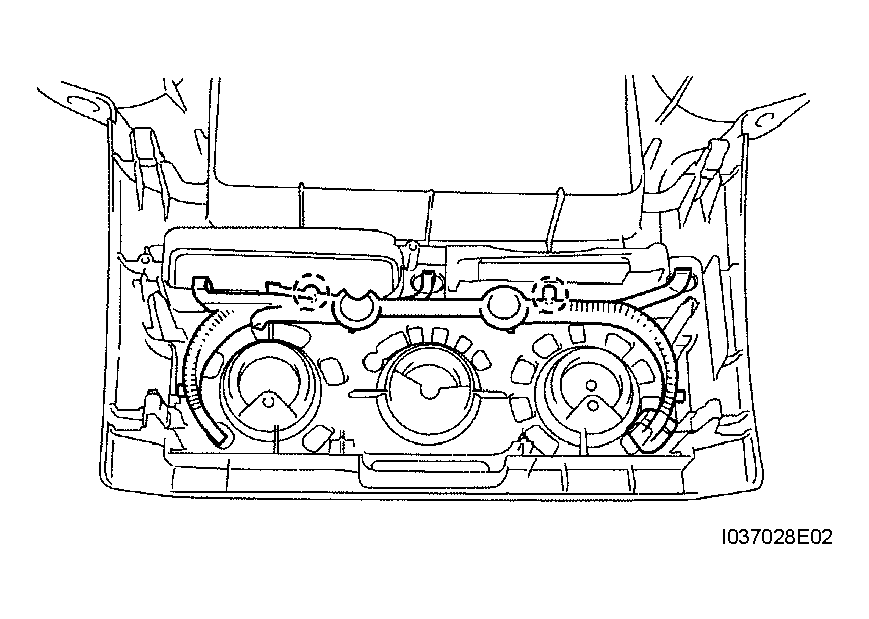
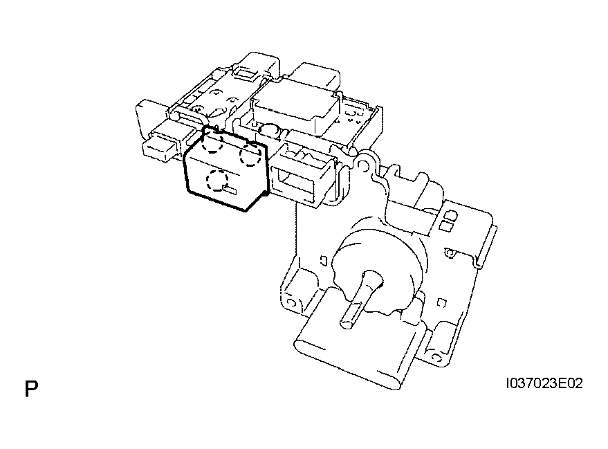
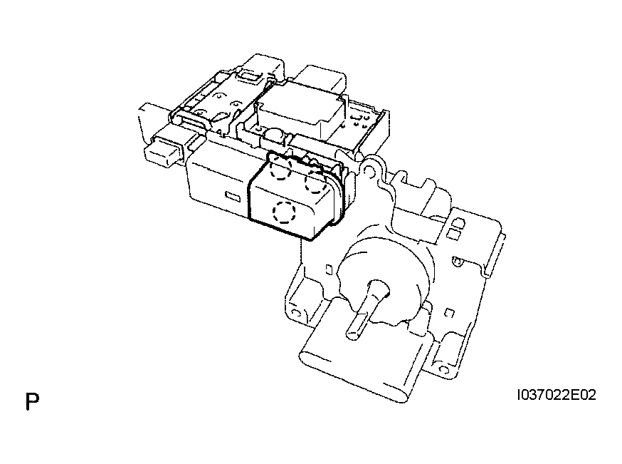
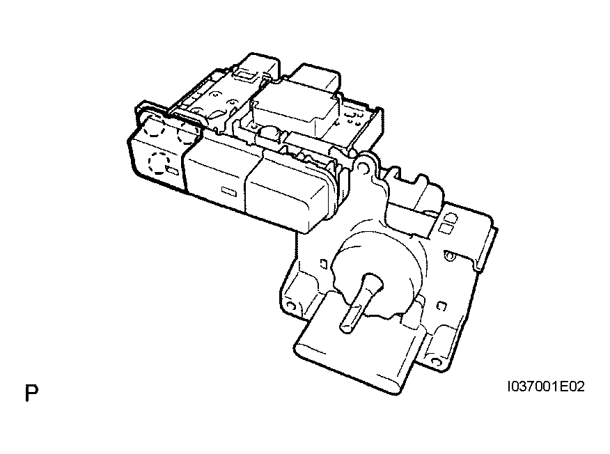

Center Cluster Module Switch: Reassembly
- INSTALL CENTER CLUSTER MODULE INDICATOR LENS ASSEMBLY
- Attach the 2 claws to install the center cluster module indicator lens.

Courtesy of © TOYOTA, LICENSE AGREEMENT TMS1002
- INSTALL NO. 6 CENTER CLUSTER MODULE KNOB
- Attach the 3 claws to install the center cluster module knob.

Courtesy of © TOYOTA, LICENSE AGREEMENT TMS1002
- INSTALL NO. 5 CENTER CLUSTER MODULE KNOB
- Attach the 3 claws to install the center cluster module knob.

Courtesy of © TOYOTA, LICENSE AGREEMENT TMS1002
- INSTALL NO. 7 CENTER CLUSTER MODULE KNOB
- Attach the 3 claws to install the center cluster module knob.

Courtesy of © TOYOTA, LICENSE AGREEMENT TMS1002